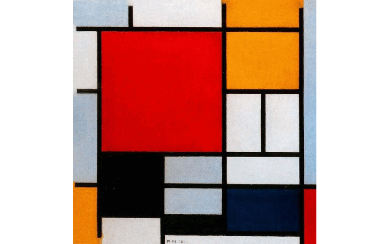
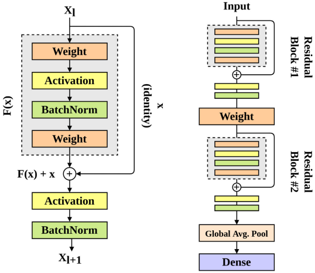
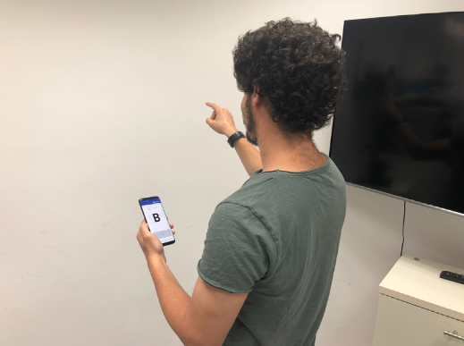
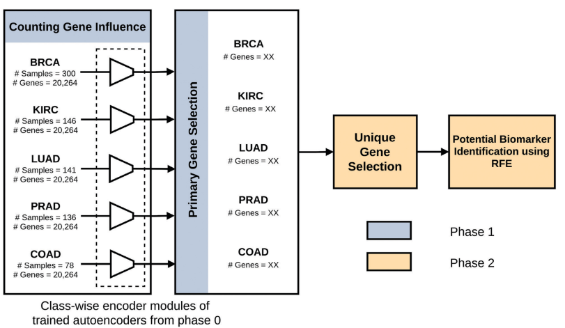
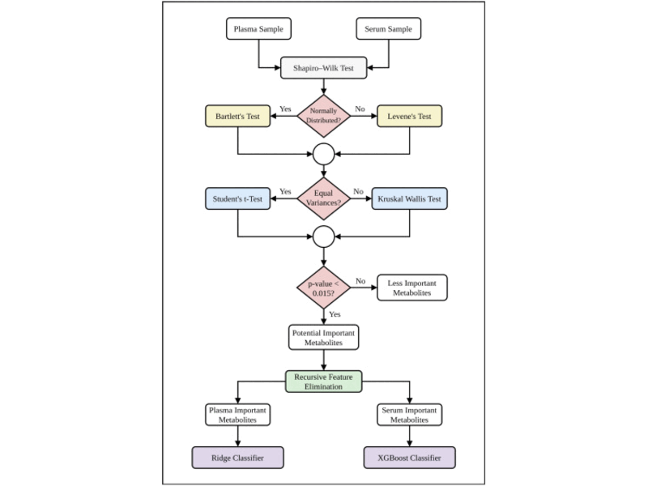
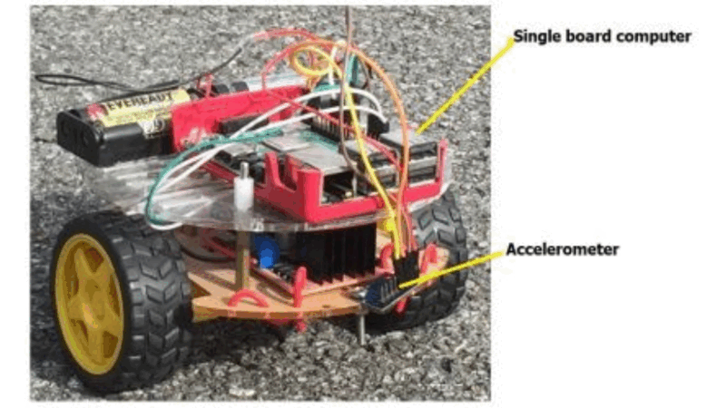
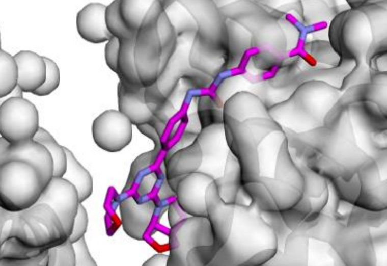
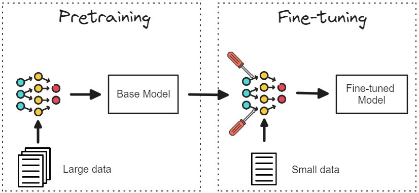
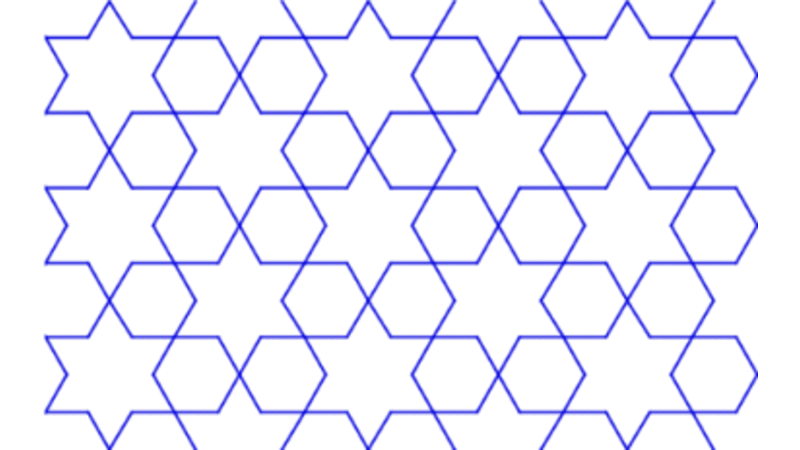
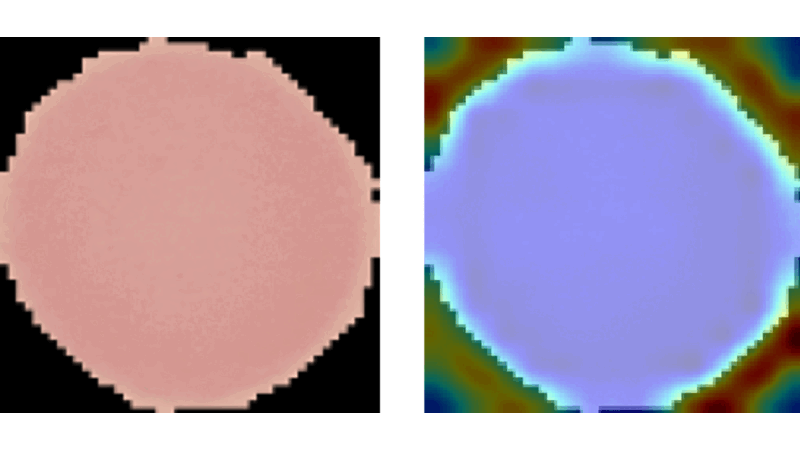

Publications

Mondrian Abstraction and Language Model Embeddings for Differential Pathway Analysis
IEEE BIBM'24:
IEEE International Conference on Bioinformatics and Biomedicine
Fuad Al Abir & Jake Chen

Gait Recognition with Wearable Sensors using Modified Residual Block-based Lightweight CNN
IEEE Access
Fuad Al Abir*, Md Al Mehedi Hasan*, Md Al Siam, Jungpil Shin (* denotes equal contribution)

Deep Learning Based Air-Writing Recognition with the Choice of Proper Interpolation Technique
Sensors
Fuad Al Abir, Md Al Siam, Abu Sayeed, Md Al Mehedi Hasan, Jungpil Shin

Biomarker Identification by Reversing the Learning Mechanism of Autoencoder and Recursive Feature Elimination
Molecular Omics
Fuad Al Abir, S M Shovan, Md Al Mehedi Hasan, Abu Sayeed, Jungpil Shin

Most Dominant Metabolomic Biomarkers Identification for Lung Cancer
Informatics in Medicine Unlocked
Utshab Kumar Ghosh, Fuad Al Abir, Nahian Rifaat, S M Shovan, Abu Sayeed, Md Al Mehedi Hasan

Surface Type Classification for Autonomous Robots Using Temporal, Statistical and Spectral Feature Extraction and Selection
IEEE MCSoC'21:
International Symposium on Embedded Multicore/Many-core Systems-on-Chip
Md Al Mehedi Hasan, Fuad Al Abir, Jungpil Shin
Current Projects

Guiding Chemical Language Models for Potent Breast Cancer Ligand Generation
Our research utilizes Chemical Language Models (CLMs) trained on SMILES for guided ligand generation for multiple targets, specifically focusing on breast cancer targets like mTOR and PI3K-α.
O'Neal Comprehensive Cancer Center, Heersink School of Medicine, UAB

TherapMind: Progressive Curriculum Tuning of Large Language Models for Therapeutics
We introduce a curriculum-based learning framework designed to fine-tune Large Language Models (LLMs) for therapeutic applications, utilizing SMILES molecular representations and protein sequence data. This progressive task complexity enables LLMs to enhance their understanding of chemical and biological domains, overcoming limitations in existing LLM fine-tuning approaches.
Systems Pharmacology AI Research Center (SPARC), Heersink School of Medicine, UAB
Past Projects

Islamic Geometric Patterns (IGPs) with Catmull-Rom Splines
This project focuses on the development of interactive software designed to generate Islamic Geometric Patterns (IGPs) using both straight lines and curves. Leveraging the p5.js (processing) framework, the software facilitates user engagement with generative art, allowing for dynamic pattern creation. Additionally, a comprehensive literature review was conducted to explore existing methodologies in interactive computing and generative art, grounding the software's development in current academic and practical contexts.

Explainable CNNs in Medical Imaging
This project aimed to enhance trust in AI applications within medicine by developing and evaluating advanced vision models on the NIH Malaria dataset. It involved creating a method similar to Grad-CAM from scratch, which aggregates propagation heatmaps to provide visual explanations of model decisions, thereby making AI workings more transparent and understandable in medical contexts.
Supervised by Dr. Md Al Mehedi Hasan
Journal Clubs at RUET
Knowledge Sharing Session: Students' Panel Discussion On Artificial Intelligence (Moderator)
09 Jan 2021
Convolutional Neural Network for Visual Recognition: From Perceptron to Infinity and Beyond
24 Feb 2020
The Journey towards Intelligent Machine: Solving our Problems by Making the Most Out of Data
21 Feb 2020
A Collection of 21 Thesis Books Authored by RUET CSE Alumni (14 - 16 Series)
11 Nov 2019